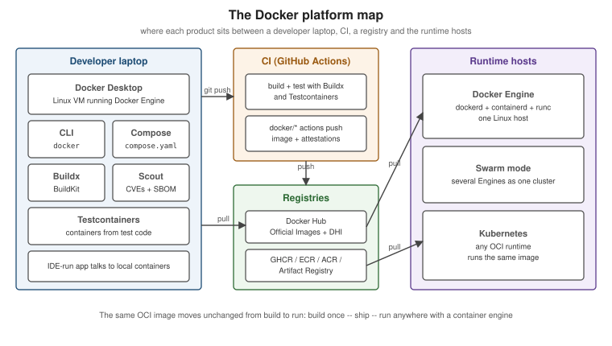

Getting Started with Docker
|
This content was generated with the assistance of AI and should be verified against the official documentation before being relied on in production. |
Docker packages an application together with everything it needs to run — its runtime, libraries, configuration
defaults and start command — into an image, and runs that image as an isolated process called a container on
any machine that has a container engine. This page is the entry point to the section: it explains the problem
Docker solves, what it deliberately does not do, how the pieces of today’s Docker platform fit together, how to
install it, and which first commands to run. Every page in this section is written against Docker Engine 29.8.x,
Docker Compose v5.5.x, Buildx 0.37.x with BuildKit 0.33.x and the docker/dockerfile:1 frontend, and Docker
Desktop 4.91 or later.
The problem Docker solves
Before containers, "deploying an application" meant reproducing a working environment on another machine: the right language runtime, the right system libraries, the right configuration files, and a start script that assumed all of the above. Every difference between a developer’s laptop, the CI server and production was a potential failure, and the deployment artifact (a JAR, a tarball, a package) carried none of that environment with it.
Docker changes the unit of deployment. The artifact becomes an image that already contains the environment, and the only contract with the host is "run this image with a container engine". The same image is built once, tested in CI, pushed to a registry and pulled unchanged into every environment. This gives four practical properties:
-
Reproducibility — the image is immutable and addressed by a content digest, so what was tested is exactly what runs.
-
Isolation — each container sees its own filesystem, process tree, network stack and resource limits, so two applications with conflicting dependencies can share one host.
-
Density and speed — containers are ordinary processes on the host kernel; there is no guest operating system to boot, so they start in milliseconds and share memory pages with other containers.
-
A standard workflow — build, ship, run:
docker build,docker push,docker runwork the same way for a Java service, a database or a command-line tool.
What Docker is not
The first chapter of Docker: Up & Running lists what Docker is not, and the list still holds against the current Docker overview:
-
Not a virtual machine. A container shares the host’s kernel. It cannot run a different kernel, and a Linux container needs a Linux kernel — which is why Docker Desktop runs one inside a lightweight VM on macOS and Windows (see Docker Architecture and the OCI).
-
Not a configuration-management tool. Docker does not converge long-lived servers towards a desired state the way Ansible, Puppet or Chef do. A container is replaced, not patched: change the image, start a new container.
-
Not an orchestrator. A single Docker Engine runs containers on one host. Scheduling across many hosts, self-healing and rolling updates belong to an orchestrator — Kubernetes, or Docker’s own Swarm mode (see Orchestration: Swarm Mode and Kubernetes).
-
Not a security boundary as strong as a VM. Namespaces and cgroups isolate well, but the kernel is shared; see Docker Security for what that implies.
Containers vs. virtual machines
A virtual machine virtualises hardware: a hypervisor presents virtual CPUs, memory and devices, and each VM boots a complete guest operating system. A container virtualises the operating system: the host kernel gives each container its own view of the process table, mounts, network interfaces, hostname and users (namespaces), and limits what it may consume (cgroups).
| Virtual machine | Container | |
|---|---|---|
What is virtualised |
Hardware (CPU, memory, devices) |
The operating system’s view (processes, mounts, network, users) |
Kernel |
One per VM, any operating system |
The host’s kernel, shared by every container |
Start-up time |
Seconds to minutes (boot a guest OS) |
Milliseconds to seconds (start a process) |
Size of the artifact |
Gigabytes (a disk image with a full OS) |
Megabytes to hundreds of megabytes (only the userland the app needs) |
Isolation strength |
Strong: a hypervisor boundary |
Good, but the kernel is shared; hardened further with user namespaces, seccomp and rootless mode |
Typical use |
Running different operating systems, strong multi-tenant isolation |
Packaging and running applications, CI, local development environments |
The two combine rather than compete: cloud providers run containers inside VMs, and Docker Desktop runs the Docker Engine inside a VM. Official page: Docker overview.
The platform map
"Docker" names a company, a set of products and an open-source engine. The pieces a backend developer meets are:

| Component | What it is |
|---|---|
Docker Engine |
The daemon ( |
Docker CLI |
The |
Docker Desktop |
The desktop application for macOS, Windows and Linux: a managed Linux VM running the Engine, plus the CLI, Compose, Buildx, a Kubernetes cluster, a dashboard and file sharing with the host. |
Docker Hub |
The default public registry: Docker Official Images, Verified Publisher images and your own repositories. See Registries and Docker Hub. |
Docker Build (Buildx and BuildKit) |
The build system: BuildKit is the engine, |
Docker Compose |
Defines and runs multi-container applications from a |
Docker Scout |
Image analysis: SBOMs, CVEs, base-image recommendations and policies. See Image Best Practices and Supply-Chain Security. |
Docker Hardened Images |
Minimal, continuously patched base images with provenance and SBOMs. |
Testcontainers |
Libraries that start throwaway containers from test code. See Testcontainers Fundamentals. |
Docker also ships products this section only names: Docker Sandboxes, Docker Model Runner, the MCP Catalog and Toolkit, Docker Offload and Docker Build Cloud. They are documented under Docker AI, Docker Offload and Docker Build Cloud and are out of scope here.
Installing Docker
There are two supported ways to get a Docker Engine on a developer machine:
| Docker Desktop | Docker Engine (Linux only) | |
|---|---|---|
Platforms |
macOS (Apple silicon and Intel), Windows (WSL 2 or Hyper-V), Linux |
Linux distributions: Ubuntu, Debian, Fedora, RHEL, CentOS Stream, SLES, Raspberry Pi OS and static binaries |
What you get |
Engine in a managed VM, CLI, Compose, Buildx, Kubernetes, Scout, a GUI, automatic updates |
The daemon and CLI packages ( |
Licensing |
Free for personal use, education, open source and small businesses; a paid subscription for larger companies |
Open source (Apache 2.0) |
Typical use |
Developer laptops |
Linux workstations, servers, CI runners |
On Linux, install Docker Engine from Docker’s own apt/dnf repository rather than the distribution’s package, as
described in Install Docker Engine. The convenience script is fine for a
throwaway VM but not for a server you care about:
# Throwaway test machines only -- review the script before piping it to a shell
curl -fsSL https://get.docker.com -o get-docker.sh
sudo sh get-docker.shDerived from Install using the convenience script.
On macOS and Windows install Docker Desktop from Get Docker; it brings the CLI, Compose and Buildx with it.
Post-install steps on Linux
By default the Docker socket (/var/run/docker.sock) is owned by root, so every docker command needs sudo.
The documented shortcut is to add your user to the docker group:
sudo groupadd docker # usually already created by the package
sudo usermod -aG docker $USER
newgrp docker # or log out and back in
docker run hello-world # now works without sudoDerived from Linux post-installation steps.
Membership of the docker group is root-equivalent: anyone who can talk to the daemon can start a container
that bind-mounts / from the host and runs as root inside it. Treat the group like sudo access. If that is not
acceptable, run the daemon in rootless mode instead (see Docker Security).
The same Linux post-installation steps page also shows how to start the daemon on boot with systemd:
sudo systemctl enable docker.service containerd.serviceFirst commands
docker version # client and server versions, API version, containerd and runc versions
docker info # storage driver, cgroup version, number of containers/images, registry mirrors, warnings
docker run hello-worlddocker version is the fastest way to confirm the CLI can reach a daemon: when the Server: section is missing,
the daemon is not running or the CLI is pointed at the wrong socket. docker run hello-world exercises the whole
path end to end — the CLI asks the daemon to run hello-world, the daemon pulls the image from Docker Hub because
it is not present locally, creates a container, starts it, streams its output back and the container exits.
Derived from Docker overview and
docker version.
A slightly more useful first container runs a web server in the background and publishes its port:
docker run -d --name web -p 8080:80 nginx:1.29
curl -s http://localhost:8080 | head -n 4
docker logs web
docker rm -f webDerived from Publishing and exposing ports. Running Containers explains every flag.
Docker contexts
The CLI does not have to talk to a local daemon. A context bundles the endpoint (a Unix socket, tcp:// with TLS,
or ssh://) and its credentials under a name, and docker context use switches every subsequent command to it:
docker context ls # * marks the current context
docker context create build-box --docker "host=ssh://ci@build-box.internal"
docker context use build-box
docker ps # now lists containers on build-box
docker --context default ps # one-off override
docker context use defaultDerived from Docker contexts. Docker Desktop creates
its own desktop-linux context. The DOCKER_HOST and DOCKER_CONTEXT environment variables override the selected
context. Tools that talk to the API directly do not necessarily read contexts: Testcontainers, for example, looks
for DOCKER_HOST, its own tc.host setting and well-known socket paths instead (see
Testcontainers
Fundamentals).
Version history behind the numbers in older books
The two 2015 books listed in the bibliography describe Docker 1.3 to 1.6. The numbering and the platform have changed several times since:
| Version | Year | What changed |
|---|---|---|
1.0 to 1.13 |
2014 to 2017 |
The original monolithic daemon. Execution drivers (LXC, then |
17.03 |
2017 |
Calendar versioning ( |
17.05 |
2017 |
Multi-stage builds in the Dockerfile. |
18.09 to 20.10 |
2018 to 2020 |
BuildKit available as an opt-in builder; cgroup v2 support (20.10); rootless mode graduates. Compose v2, announced
in 2020 and rewritten in Go, ships as the |
23.0 |
2023 |
Calendar versioning is dropped for SemVer-style numbering, so later releases have integer major versions (24.0, 25.0, …). Buildx and BuildKit become the default builder on Linux; the legacy builder is deprecated. |
25.0 to 28 |
2024 to 2025 |
The containerd image store as an option. |
29 |
2025 |
The containerd image store is the default for fresh installs, Docker Content Trust is removed from the CLI,
cgroup v1 is deprecated, nftables can be selected as the firewall backend, legacy-link environment variables are
no longer injected, and |
Derived from the Docker Engine release notes, Engine 23.0 release notes (the switch to SemVer), Engine 29 release notes and History and development of Docker Compose. Boot2Docker and Docker Machine are historical: Docker Desktop replaced them on macOS and Windows, and on Linux you install Docker Engine directly. Vagrant-based setups from the same era are likewise unnecessary.
Where to go next
Read Docker Architecture and the OCI to see what happens behind
docker run, then Images, Layers and Tags and
Dockerfile Fundamentals. The full reading order is on the
section landing page.